import numpy as np
import matplotlib.pyplot as plt
np.random.seed(1)Seminar 4: Temporal-Difference (TD) Learning
In this seminar, we will implement and evaluate elementary solution methods for reinforcement learning, including methods based on Monte Carlo (MC) estimation and time-differencing (TD) methods. Specifically, we will consider examples in which we use the following solution methods:
- A. The Random Walk problem: value function estimation using TD(0) methods
- B. The Windy GridWorld problem: SARSA algorithm for estimation of the action value function and control
- C. The Cliff Walking problem: Q-learning algorithm and comparison with SARSA
The learning methods considered are based on backups which for dynamic programming, Monte Carlo, and temporal-difference learning can be represented as follows:
| 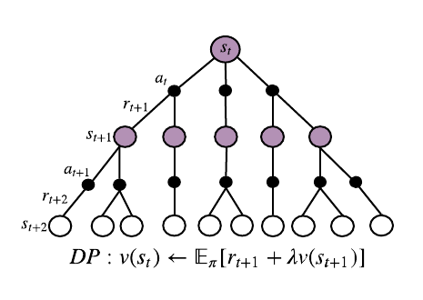 | 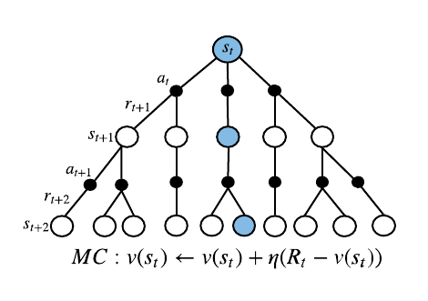 | 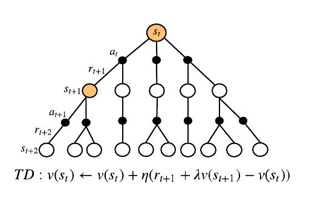 |
The environment
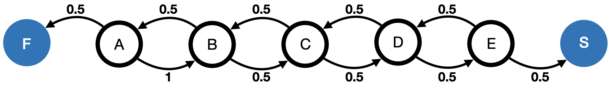
Reward is 1 if we move from E to S and 0 otherwise.
We first define the environment.
Following the style of OpenAI Gym, we write a class that contains a step function and a reset function:
# actions
left = 0
right = 1
class RandomWalk:
def __init__(self, initial_state):
self.initial_state = initial_state
self.state = self.initial_state
self.reward = 0.0
self.is_terminal = False
# write step function that returns obs(next state), reward, is_done
def step(self, action):
if self.state == 5 and action == right:
self.state += 1
self.is_terminal = True
self.reward = 1.0
elif self.state == 1 and action == left:
self.state -= 1
self.is_terminal = True
self.reward = 0.0
else:
if action == left:
self.state -= 1
self.is_terminal = False
self.reward = 0.0
else:
self.state += 1
self.is_terminal = False
self.reward = 0.0
return self.state, self.reward, self.is_terminal
def reset(self):
self.state = self.initial_state
self.reward = 0.0
self.is_terminal = False
return self.stateRandom policy
A policy that takes a random action (0, 1):
def random_policy():
return np.random.binomial(1, 0.5)The learning algorithm
Our goal is to estimate the value function using the TD(0) algorithm, which was described in the lecture notes:
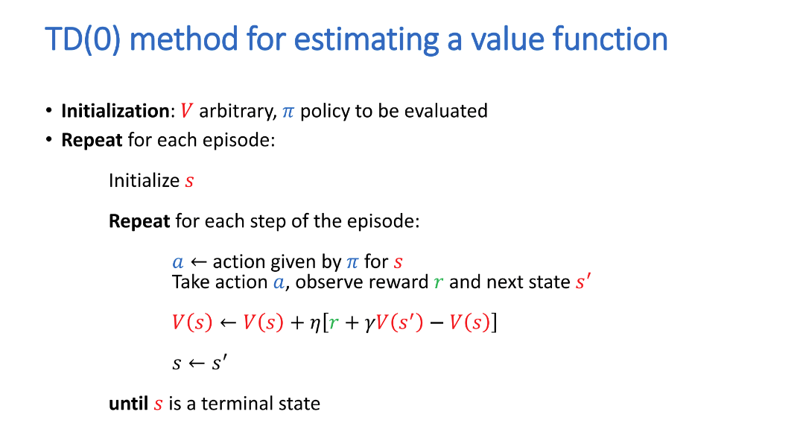
Implement the TD algorithm with step size = 0.1 and no discount:
def temporal_difference(value, next_value, r, alpha=0.1):
return value + alpha * (r + next_value - value)def plot_state_value(history, true_values):
plt.figure(1)
x = [1, 2, 3, 4, 5]
my_xticks = ['A', 'B', 'C', 'D', 'E']
plt.xticks(x, my_xticks)
episodes = [0, 1, 10, 100]
for i in range(len(history)):
if i in episodes:
plt.plot(x, history[i][1:6], 'o-', label=str(i)+' episode(s)')
plt.plot(x, true_values[1:6], label='true values')
plt.xlabel('state')
plt.ylabel('estimated value')
plt.legend()
plt.show()
true_values = np.zeros(7)
true_values[1:6] = np.arange(1, 6) / 6.0
true_values[6] = 0. values = np.zeros(7)
value_history = [np.copy(values)]
initial_state = 3
env = RandomWalk(initial_state)
episodes = 100
for i in range(1, episodes + 1):
state = env.reset()
done = False
while not done:
a = random_policy()
next_state, r, done = env.step(a)
values[state] = temporal_difference(values[state], values[next_state], r)
state = next_state
value_history.append(np.copy(values))
plot_state_value(value_history, true_values)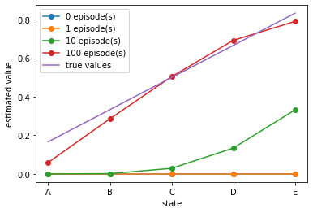
B. The Windy GridWorld problem
The goal of this exercise is implement and evaluate SARSA algorithm for the Windy GridWorld problem which is defined as follows.
The Windy GridWorld problem is described in Example 6.5 in Sutton & Barto. 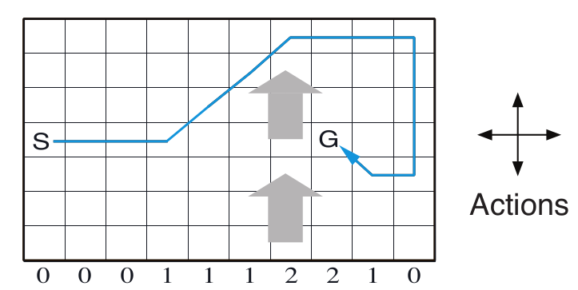
The Windy Gridworld problem is a standard gridworld with a crosswind upward through the middle of the grid. The strength of the wind is indicated by the number below each column. For example, if you are in the cell to the right of the goal, the action left will take you to the cell above the goal. To be precise, the next cell you will end up in depends on the action taken and the wind in the current cell. - An undiscounted episodic task - Rewards of -1 until the goal is reached
Similarly, define the variables and parameters as defined in the book,
world_height = 7
world_width = 10
wind_strength = [0, 0, 0, 1, 1, 1, 2, 2, 1, 0]
# actions
up = 0
left = 1
right = 2
down = 3
actions = [up, left, right, down]The environment
A step function that returns next state, reward and is_done. Note that the next state is the current state moved towards the current action direction + the wind direction of the current state.
class WindyGridworld:
def __init__(self, init_position, goal_position):
self.initial_state = init_position
self.goal_state = goal_position
self.state = self.initial_state
self.reward = 0.0
self.is_terminal = False
# return (next state, reward, is_done)
def step(self, action):
i, j = self.state
if self.state == self.goal_state:
self.reward = 0.0
self.is_terminal = True
else:
if action == up:
self.state = [max(i - 1 - wind_strength[j], 0), j]
elif action == left:
# the next state (j-1) is the action + the wind in the previous state (j)
self.state = [max(i - wind_strength[j], 0), max(j - 1, 0)]
elif action == right:
self.state = [max(i - wind_strength[j], 0), min(j + 1, world_width - 1)]
elif action == down:
self.state = [max(min(i + 1 - wind_strength[j], world_height - 1), 0), j]
else:
assert False, "Actions should be in the range of (0, 4)."
self.reward = -1.0
self.is_terminal = False
return self.state, self.reward, self.is_terminal
def reset(self):
self.state = self.initial_state
self.reward = 0.0
self.is_terminal = False
return self.state
The policy
Implement an \(\varepsilon\)-greedy policy
def epsilon_greedy_policy(q_values, epsilon=0.1):
if np.random.binomial(1, epsilon) == 1:
return np.random.choice(actions)
else:
return np.random.choice([action_ for action_, value_ in enumerate(q_values) if value_ == np.max(q_values)])The algorithm:
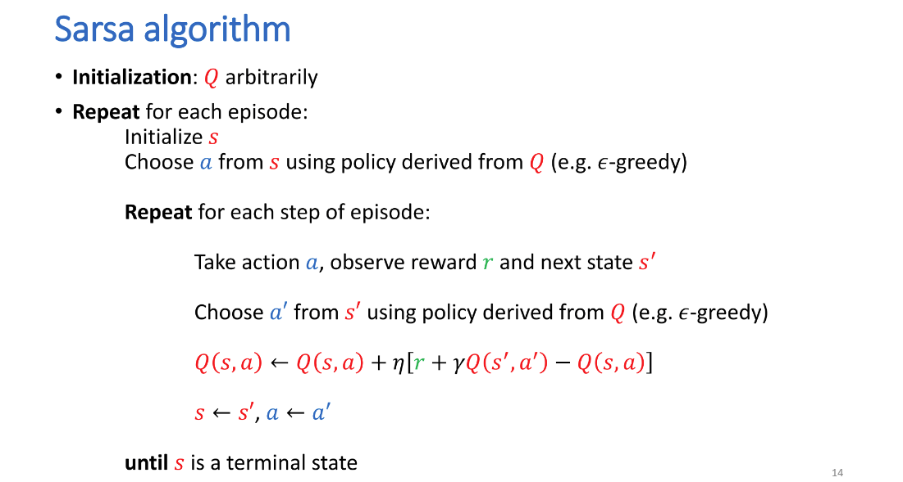
def sarsa(qsa, next_qsa, r, alpha=0.1, gamma=1.0):
return qsa + alpha * (r + gamma * next_qsa - qsa)Solve the Windy GridWorld problem:
q_sa = np.zeros((world_height, world_width, len(actions)))
episodes = 200
timesteps = []
start_position = [3, 0]
terminal_position = [3, 7]
env = WindyGridworld(start_position, terminal_position)
for i in range(1, episodes + 1):
state = env.reset()
is_done = False
row, col = state
# initialise a
a = epsilon_greedy_policy(q_sa[row, col, :])
timesteps_per_epi = 1
while not is_done:
next_state, r, is_done = env.step(a)
row, col = state
n_row, n_col = next_state
next_a = epsilon_greedy_policy(q_sa[n_row, n_col, :])
q_sa[row, col, a] = sarsa(q_sa[row, col, a], q_sa[n_row, n_col, next_a], r)
state = next_state
a = next_a
timesteps_per_epi += 1
timesteps.append(timesteps_per_epi)def plot_episode_steps(steps, episodes):
plt.plot(np.arange(1, episodes + 1), steps)
plt.title("Episodes vs Time Steps")
plt.xlabel("Episode")
plt.ylabel("Time Steps")
plt.show()
plot_episode_steps(timesteps, episodes)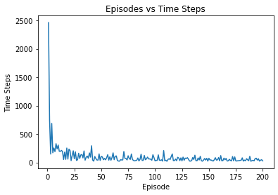
In this problem, the only way to terminate an episode is to reach the goal state. The curve shows that the number of time steps requires drastically decreases.
Note that the policy is unable to converge to the optimal policy after 170 episodes. Let the number of episodes be 1000. By the end of 1000 episodes, we choose a greedy policy
def print_optimal_policy(policy, terminal_position):
policy_display = np.empty_like(policy, dtype=str)
wind = np.empty_like(wind_strength, dtype=str)
for i in range(0, world_height):
for j in range(0, world_width):
wind[j] = str(wind_strength[j])
if [i, j] == terminal_position:
policy_display[i, j] = 'G'
continue
a = policy[i, j]
if a == up:
policy_display[i, j] = 'U'
elif a == left:
policy_display[i, j] = 'L'
elif a == right:
policy_display[i, j] = 'R'
elif a == down:
policy_display[i, j] = 'D'
print('Optimal policy is:')
for row in policy_display:
print(row)
print(wind)
episodes = 1000
for i in range(1, episodes + 1):
state = env.reset()
is_done = False
row, col = state
# initialise a
a = epsilon_greedy_policy(q_sa[row, col, :])
while not is_done:
next_state, r, is_done = env.step(a)
row, col = state
n_row, n_col = next_state
next_a = epsilon_greedy_policy(q_sa[n_row, n_col, :])
q_sa[row, col, a] = sarsa(q_sa[row, col, a], q_sa[n_row, n_col, next_a], r)
state = next_state
a = next_a
optimal_policy = np.argmax(q_sa, axis=2)
print_optimal_policy(optimal_policy, terminal_position)Optimal policy is:
['D' 'R' 'U' 'R' 'U' 'R' 'R' 'R' 'R' 'D']
['D' 'U' 'R' 'U' 'R' 'R' 'R' 'R' 'U' 'D']
['R' 'R' 'R' 'R' 'R' 'R' 'R' 'D' 'R' 'D']
['R' 'R' 'R' 'R' 'R' 'R' 'R' 'G' 'R' 'D']
['R' 'R' 'R' 'R' 'R' 'R' 'U' 'D' 'L' 'L']
['D' 'R' 'R' 'D' 'R' 'U' 'U' 'R' 'L' 'D']
['R' 'R' 'R' 'U' 'U' 'U' 'U' 'U' 'L' 'U']
['0' '0' '0' '1' '1' '1' '2' '2' '1' '0']C. The Cliff Walking problem
In this exercise, our goal is to implement and evaluate Q-learning algorithm for the Cliff Walking problem, and compare with SARSA.
The Cliff Walking problem is described in Example 6.6 in Sutton & Barto. 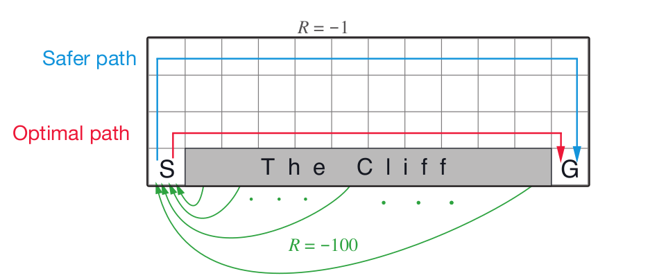 - This is a standard undiscounted and episodic gridworld problem with starting and goal states - Rewards of -1 for each move - Stepping into the region marked “The Cliff” incurs a reward of -100 and sends the agent instantly back to the start state
The purpose of this example is to compare SARSA and Q-learning, highlighting the difference between on-policy (sarsa) and off-policy (Q-learning) methods.
The environment
class CliffWalking:
def __init__(self, initial_state, goal_state):
self.initial_state = initial_state
self.goal_state = goal_state
self.state = self.initial_state
self.reward = 0.0
self.is_terminal = False
def is_cliff(self):
cliff = np.zeros((world_height, world_width), dtype=bool)
cliff[3, 1: -1] = True
return cliff[tuple(self.state)]
# return next_state, reward, done
def step(self, action):
i, j = self.state
if action == up:
self.state = [max(i - 1, 0), j]
elif action == left:
self.state = [i, max(j - 1, 0)]
elif action == right:
self.state = [i, min(j + 1, world_width - 1)]
elif action == down:
self.state = [min(i + 1, world_height - 1), j]
else:
assert False, "Actions should be in the range of (0, 4)"
if self.is_cliff():
self.state = self.initial_state
self.reward = -100.0
self.is_terminal = False
elif self.state == self.goal_state:
self.state = self.state
self.reward = 0.0
self.is_terminal = True
else:
self.reward = -1.0
self.is_terminal = False
return self.state, self.reward, self.is_terminal
def reset(self):
self.state = self.initial_state
self.reward = 0.0
self.is_terminal = False
return self.state
A helper function to check if the current state is in the region of cliff,
def is_cliff(self):
cliff = np.zeros((world_height, world_width), dtype=np.bool)
cliff[3, 1: -1] = True
return cliff[tuple(self.state)]The Q-learning algorithm
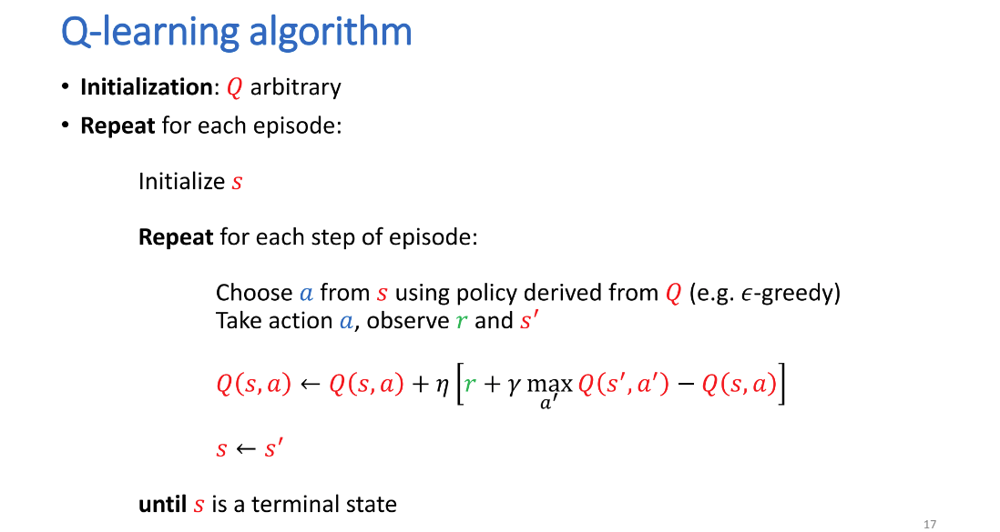
Note that you need to pass all the state-action pairs of the next state,
def eps_greedy_policy(qsa, epsilon=0.1):
if np.random.binomial(1, epsilon) == 1:
return np.random.choice(actions)
else:
return np.random.choice([action_ for action_, value_ in enumerate(qsa) if value_ == np.max(qsa)])
def sarsa(qsa, next_qsa, r, alpha=0.1, gamma=1.0):
return qsa + alpha * (r + gamma * next_qsa - qsa)
def q_learning(qsa, next_qs, r, alpha=0.1, gamma=1.0):
return qsa + alpha * (r + gamma * np.max(next_qs) - qsa)It is impossible to produce a smooth reward curve after a single run. We therefore take multiple runs and take the average of the rewards per episode over 500 episodes in total.
start_position = [3, 0]
goal = [3, 11]
world_width = 12
world_height = 4
# actions
up = 0
left = 1
right = 2
down = 3
actions = [up, left, right, down]import numpy as np
env_sarsa = CliffWalking(start_position, goal)
env_q_learning = CliffWalking(start_position, goal)
runs = 10
episodes = 500
rewards_sarsa = np.zeros(episodes)
rewards_qlearning = np.zeros_like(rewards_sarsa)
# Create two instances of the environments for comparison
env_sarsa = CliffWalking(start_position, goal)
env_q_learning = CliffWalking(start_position, goal)
for r in range(runs):
q_sarsa = np.zeros((world_height, world_width, len(actions)))
q_qlearning = np.zeros_like(q_sarsa)
for i in range(episodes):
state_sarsa = env_sarsa.reset()
state_q = env_q_learning.reset()
done_sarsa = False
done_q = False
# choose an action based on current state
row, col = state_sarsa
a_sarsa = eps_greedy_policy(q_sarsa[row, col, :])
g_sarsa = 0.0
g_q = 0.0
#Sarsa
while not done_sarsa:
next_state_sarsa, r_sarsa, done_sarsa = env_sarsa.step(a_sarsa)
# choose an action for the next state
row, col = state_sarsa
n_row, n_col = next_state_sarsa
next_a_sarsa = eps_greedy_policy(q_sarsa[n_row, n_col, :])
g_sarsa += r_sarsa
# sarsa updates
q_sarsa[row, col, a_sarsa] = sarsa(q_sarsa[row, col, a_sarsa], q_sarsa[n_row, n_col, next_a_sarsa], r_sarsa)
state_sarsa = next_state_sarsa
a_sarsa = next_a_sarsa
#Q-Learning
while not done_q:
row_q, col_q = state_q
a_q = eps_greedy_policy(q_qlearning[row_q, col_q, :])
next_state_q, r_q, done_q = env_q_learning.step(a_q)
g_q += r_q
# Q-learning updates, note the second argument
n_row_q, n_col_q = next_state_q
q_qlearning[row_q, col_q, a_q] = q_learning(q_qlearning[row_q, col_q, a_q],
q_qlearning[n_row_q, n_col_q, :], r_q)
state_q= next_state_q
rewards_sarsa[i] += g_sarsa
rewards_qlearning[i] += g_qThe comparison of the methods:
import matplotlib.pyplot as plt
def plot_rewards(plots):
plt.figure()
for plot in plots:
method, method_title = plot
plt.plot(method, label=method_title)
# plt.plot(r_qlearning, label='Q-learning')
plt.xlabel('Episodes')
plt.ylabel('Sum of rewards during episodes')
plt.ylim([-100, 0])
plt.legend()
plt.show()
rewards_sarsa /= runs
rewards_qlearning /= runs
plot_rewards([[rewards_sarsa, 'Sarsa'], [rewards_qlearning, 'Q-learning']])
#[rewards_double_qlearning, 'Double-Q-learning']])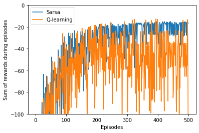
The worse performance of Q-learning method is due to the \(\varepsilon\)-greedy policy which results in the agent’s occasionally falling off the cliff when the method takes the optimal rather than safer path.
def print_optimal_policy(policy, method):
policy_display = np.empty_like(policy, dtype=str)
for i in range(0, world_height):
for j in range(0, world_width):
if [i, j] == [3, 11]:
policy_display[i, j] = 'G'
continue
if i == 3 and j in np.arange(1,11):
policy_display[i, j] = 'C'
continue
a = policy[i, j]
if a == up:
policy_display[i, j] = 'U'
elif a == left:
policy_display[i, j] = 'L'
elif a == right:
policy_display[i, j] = 'R'
elif a == down:
policy_display[i, j] = 'D'
print(method + ' Optimal policy is:')
for row in policy_display:
print(row)
optimal_policy = np.argmax(q_sarsa, axis=2)
print_optimal_policy(optimal_policy, 'SARSA')
optimal_policy = np.argmax(q_qlearning, axis=2)
print_optimal_policy(optimal_policy, 'Q-Learning')SARSA Optimal policy is:
['R' 'R' 'R' 'R' 'R' 'R' 'R' 'R' 'R' 'R' 'D' 'D']
['R' 'R' 'R' 'R' 'R' 'R' 'R' 'R' 'R' 'R' 'R' 'D']
['U' 'U' 'U' 'L' 'U' 'R' 'R' 'R' 'R' 'R' 'R' 'D']
['U' 'C' 'C' 'C' 'C' 'C' 'C' 'C' 'C' 'C' 'C' 'G']
Q-Learning Optimal policy is:
['L' 'R' 'U' 'U' 'D' 'R' 'R' 'R' 'R' 'R' 'R' 'D']
['L' 'U' 'U' 'R' 'R' 'U' 'D' 'R' 'R' 'D' 'D' 'D']
['R' 'R' 'R' 'R' 'R' 'R' 'R' 'R' 'R' 'R' 'R' 'D']
['U' 'C' 'C' 'C' 'C' 'C' 'C' 'C' 'C' 'C' 'C' 'G']Notice that SARSA identifies a safer path (the optimal path is not optimal here due to that the \(\varepsilon\)-greedy policy, which might force the agent to fall into the cliff when walking along the optimal path, yielding a low value)